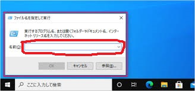

サンプルアプリ制作キットを作ってみました！
一からプログラミングを始める方にとっては、最初はよくわからないことの方が多いと思います。
こちらの制作キットで、是非プログラミングを体験して頂き、
段々「こういうものなんだ！」と思ってもらえれば嬉しいです♪
少しでも面白い部分があると段々繋がってくるはずですので、
気分が乗った時に作ってみてください(^^)
文字色設定：横のカラーパレットをクリックすると、エディタの文字色を設定することができます♪
背景色設定：横のカラーパレットをクリックすると、エディタの背景色を設定することができます♪
書いてあるコードの内容については、今は理解できなくても問題ありません！
制作進めていき、振り返った際にきっと様々なことが繋がるはずです！♪
１、まず、パソコンの中から「メモ帳」（Macの場合は、「テキストエディット」みたいです）を開きます
メモ帳を開く手順
■画面左下のWindowsロゴをクリック

■メニュー上部の「すべてのアプリ」をクリック

■表示されたアプリ内から、「Windowsアクセサリ」をクリック

■メモ帳をクリック

■キーボードの「Windowsロゴキー + R」を同時に押す

■表示された入力欄に「notepad」と入力し、Enterキーを押す
こちらのサイトも参考になります（https://office-hack.com/windows/windows10-notepad/）
２、次にテキストファイルとして保存します
テキストファイルとして保存する手順

■表示されたメニューから「名前を付けて保存」をクリック

■名前を付けて保存するためのエクスプローラーが開きますので、左上の「新しいフォルダー」をクリック

■作成された新しいフォルダーに「プログラミング勉強用フォルダ」など好きな名前を付け、
そのフォルダをダブルクリックし、フォルダ内に入る

■ファイル名欄に「study_1.html」を入力し、「保存」ボタンをクリック

参考サイト：https://office-hack.com/windows/windows10-notepad/
３、送付した「study_1.html」の記載内容を、保存して頂いた「study_1.html」に模写します
【重要】自分で記載内容を打ち込むことが大切なので、コピー＆ペーストは今回は無しでお願いしますm(_ _)m
模写する手順

■新しいメモ帳が開くので、見本として受け取った「study_1.html」のファイルをクリックしたままでメモ帳のウィンドウへ移動させ、クリックを離す

■開いた見本を見ながら保存して頂いた「study_1.html」へ書き写す

■書き写し終わったら、「Ctrl + S」、もしくはメモ帳左上の「ファイル」 -> 「上書き保存」をクリックして保存します
４、以下に記載の内容で、先ほどの手順２、手順３を行います
【重要】自分で記載内容を打ち込むことが大切なので、コピー＆ペーストは今回は無しでお願いしますm(_ _)m
手順２、手順３を行う際の内容
※作成・保存先フォルダは、前手順で作成・保存して頂いた「study_1.html」と同じフォルダ
※作成・保存方法に関してはこちらを参照
■模写の見本にして頂くファイルは、「study_1.css」
※前手順と同様に、見本と模写用のメモ帳を並べて表示頂くと写しやすいです
５、以下に記載の内容で、先ほどの手順２、手順３を行います
【重要】自分で記載内容を打ち込むことが大切なので、コピー＆ペーストは今回は無しでお願いしますm(_ _)m
手順２、手順３を行う際の内容
※作成・保存先フォルダは、前手順で作成・保存して頂いた「study_1.html」と同じフォルダ
※作成・保存方法に関してはこちらを参照
■模写の見本にして頂くファイルは、「study_1.js」
※前手順と同様に、見本と模写用のメモ帳を並べて表示頂くと写しやすいです
６、作成して頂いた「study_1.html」をダブルクリックする
以下のイメージのようなページが表示されれば成功です

■イメージ２